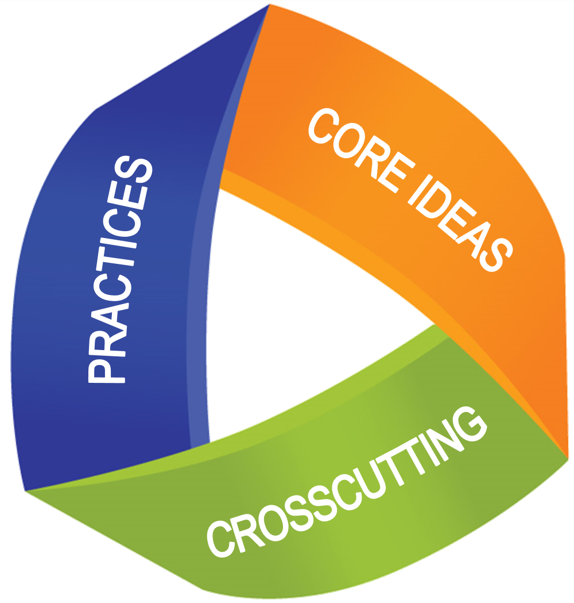

 NGSS
Integrating the Next Generation Science Standards (NGSS)
Our goal is to provide strong support for instructors who have designed their curriculum to incorporate NGSS innovations in teaching and learning.
-
1. Make all standards accessible to all students
Each investigation comes with tools for differentiation. All investigations and support materials are available in Spanish and English.
-
2. Provide “ready to go” investigations in which students interact with authentic data and tools
Everything you need is here in one place: Online notebooks do the heavy lifting of accessing and analyzing data and sharing results, creating more time for collaboration and class discussion.
-
3. Begin each foundational investigation with a phenomenon
Pressed for time? Most investigations can be completed in a single class period. Want to go deep? Add in more components of NGSS teaching styles or extension investigations.
-
4. Offer flexible options for teaching styles and assessment
LSST Extension investigations and Ideas for further study are included in each teacher guide. The Research/Collaborate link on the Education Hub offers more ideas for extended projects.
-
5. Suggest options for in-depth and student-directed explorations
LSST Extension investigations and Ideas for further study are included in each teacher guide. The Research/Collaborate link on the Education Hub offers more ideas for extended projects.
-
6. Support our materials with sustained professional development, tutorials and human communication
The Education Hub links to tutorials, archived web seminars, an FAQ and a Forum where you can interact with LSST staff and other instructors.
-
7. Host a repository of ideas, assessments and lessons developed by other educators that support the goals of NGSS
The Forum and Collaborate/Research pages provide an opportunity to discuss topics with other instructors. Teacher-contributed activities may be downloaded and customized.
Investigation Timing Options
All LSST notebook investigations are designed to be 1-2 hours or class periods in length. The time will vary depending on how the instructor chooses to context the investigation and assessment.
For one hour or class period:
Students can view the introductory video and complete the notebook.
For two (or more) hours or class periods, add:
- Completion of an extension investigation
- A class discussion of the assessment video
- An academically- productive class discussion
- Poster/ whiteboard presentations
- A gallery walk
- Completion of a Driving Question Board or KLEWS chart
NGSS Assessment Techniques from NGSS@NSTA
Students can demonstrate competency with tasks such as:
- Developing and refining models;
- Generating, discussing and analyzing data;
- Constructing spoken and written scientific explanations;
- Engaging in evidence-based argumentation; or
- Reflecting on their own understanding.
Students can demonstrate competency with tasks such as:
- Use the LSST Assessment video and discuss it with your class. During the video pauses, you can make use of some form of classroom response system to query the class. Some examples are: Kahoot, Clickers, Socrative, Poll Everywhere, or student response cards.
- Ask students to complete a narrative summary in their Jupyter notebooks.
- Use the set of question prompts that accompany the custom NGSS assessment rubric for the activity. These may be used for class discussion or inserted into quizzes.
- Conduct an Academically Productive Discussion.
- Have students complete a Driving Question Board or KLEWS chart.
- Students can create white boards or posters to present and compare their findings. This may be used in conjunction with a Gallery Walk.
- Students can design a game, brochure, or video explaining what they have learned.
Integrating the Next Generation Science Standards (NGSS)
Our goal is to provide strong support for instructors who have designed their curriculum to incorporate NGSS innovations in teaching and learning.
-
1. Incorporate three-dimensional learning and assessment
Not only are specific three-dimensional learning components identified, but assessment rubrics and questions offer methods to evaluate each. Each Disciplinary Core Idea (DCI) is rated to identify the degree to which it is addressed:
- Directly addresses and/or supports one or more components in the DCIs and/or performance expectations
- Is related to DCIs or performance expectations in other science domains
-
2. Offer tools for instructional sequencing
A search tool helps to find the appropriate investigations for each DCI and suggests possible sequences and extensions.
-
3. Illustrate connections to engineering
Every time a student conducts an LSST Jupyter notebook investigation, he or she is interacting with authentic data that is collected and delivered through a combined historic effort of engineers, scientists, software developers and architects:
- 1. Online data query and analysis is via embedded interactive tools designed by software engineers.
- 2. Images are produced from the world’s largest digital camera (3.2 billion pixels, the equivalent of 1500 HDTVs). Individual images cover large areas of the sky (7 times the width of the full moon) and at the same time can detect stars as faint as magnitude 25.
- 3. High speed, continuous data transfers deliver 30 terabytes of new data per night.
- 4. For the first time, a nearly-continuous record of the changing sky will be produced, recording an estimated ten million objects per night that have either changed in brightness or position since the most recently-recorded image. From the NGSS Connections to Engineering (Re: the interdependence of science, engineering and technology:
- Grades 6-8 Connections Statements: Engineering advances have led to important discoveries in virtually every field of science and scientific discoveries have led to the development of entire industries and engineered systems.
- Grades 9-12 Connections Statements: Science and engineering complement each other in the cycle known as research and development (R&D). Many R&D projects may involve scientists, engineers, and others with wide ranges of expertise.
-
4. Incorporate English and Math Standards
English language arts and mathematics standards that are integral to each investigation are identified.
Customizable rubric for NGSS assessment
The rubric below contains all DCIs, Crosscutting Concepts and Practices that LSST investigations are designed to address. Simply delete the rows you don’t need and modify the scoring if desired.
- 0 – Student demonstrates no growth, application or understanding, even with major prompting and assistance.
- 1 – Student demonstrates partial or incomplete growth, application or understanding, but only with major prompting and assistance.
- 2 – Student demonstrates partial or incomplete growth, application or understanding, with only minor prompting and assistance.
- 3 – Student demonstrates competency in application or understanding without assistance.
- 4 – Student demonstrates outstanding mastery of application and understanding.
| NGSS Assessment Rubric | Novice 1 Point | On the way 2 Points | Competent 3 points | Advanced 4 points |
|---|---|---|---|---|
| Practices | ||||
| Asking questions | ||||
| Developing and using models | ||||
| Analyzing and interpreting data | ||||
| Obtaining, evaluating, and communicating information | ||||
| Using mathematical & computational thinking | ||||
| Constructing explanations | ||||
| Engaging in argument from evidence | ||||
| Disciplinary Core Ideas | ||||
| MS-ESS1-2 1.A | ||||
| MS-ESS1-2 1.B | ||||
| MS-ESS1-3 1.B | ||||
| HS-ESS1-1 1.A | ||||
| HS-ESS1-2 1.A | ||||
| HS-ESS1-3 1.A | ||||
| HS-ESS1-4 1.B | ||||
| MS-PS4-1 4.A | ||||
| MS-PS4-1 4.B | ||||
| MS-PS4-1 4.C | ||||
| MS-PS4-2 4.A | ||||
| MS-PS4-2 4.B | ||||
| Crosscutting Concepts | ||||
| Patterns | ||||
| Cause and effect | ||||
| Scale, proportion and quantity | ||||
| Systems and system models | ||||
| Energy and matter | ||||
| Structure and function | ||||
| Stability and change |
Integrating the Next Generation Science Standards (NGSS)
Our goal is to provide strong support for instructors who have designed their curriculum to incorporate NGSS innovations in teaching and learning.
-
1. Offer flexible options for teaching styles and assessment
Pressed for time? Most investigations can be completed in a single class period. Want to go deep? Add in more components of NGSS teaching styles or extension investigations.
- 2. Host a repository of ideas, assessments and lessons developed by other educators that support the goals of NGSS
-
3. Incorporate three-dimensional learning and assessment
Not only are specific three-dimensional learning components identified, but assessment rubrics and questions offer methods to evaluate each. Each Disciplinary Core Idea (DCI) is rated to identify the degree to which it is addressed:
- Directly addresses and/or supports one or more components in the DCIs and/or performance expectations
- Is related to DCIs or performance expectations in other science domains